Electronics
Table of Contents
The Basics
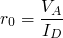,
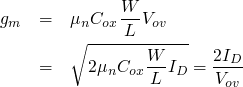
Amplifier
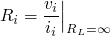
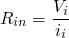
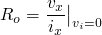
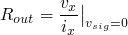
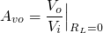
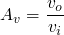
Single Stage Integrated-Circuit Amplifier
Determing the 3db frequency
-
Dominate pole response


Miller's effect
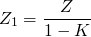
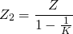
The CS and CE amplifier with active load
High frequency Response
-
Using Miller's Theorem
 .
.
So
 , where 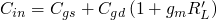
, where 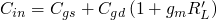
-
Using Time Constant
 ,
,  , 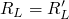
, 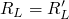
-
Adapting the formulas to CE amplifier
, and 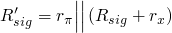
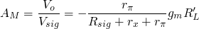
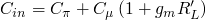

The CG and CB amplifier with active load
When
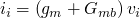
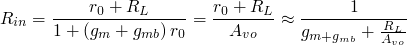 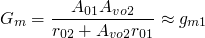
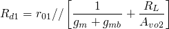
Refer to page 617.
Time Constant
sees a 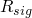
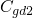 sees a 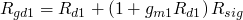
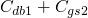 sees 
 sees
sees
CS and CE amplifier with source degeneration
As CG amplifier  .
.
.
.
 reduces the amplifier transconductance and increase its output resistance by the same factor 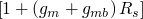'
reduces the amplifier transconductance and increase its output resistance by the same factor 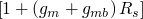'
Frequency response
 , where
, where
Date: 2010-04-16 19:36:11 CST